Все буквы — векторные (SVG): чёткие на любой вывеске, визитке и в телефоне. Розовый «ноготок» — фирменная деталь вместо апострофа.
Строгие прописные с контрастными засечками (как у Dior, Chanel). Самый «дорогой» и спокойный.
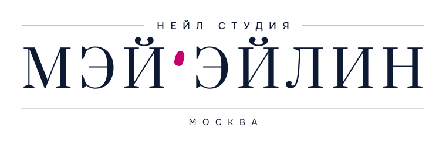
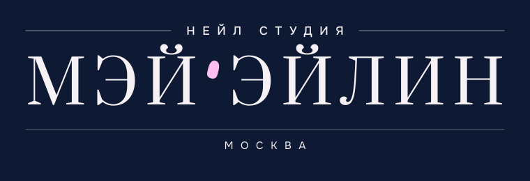
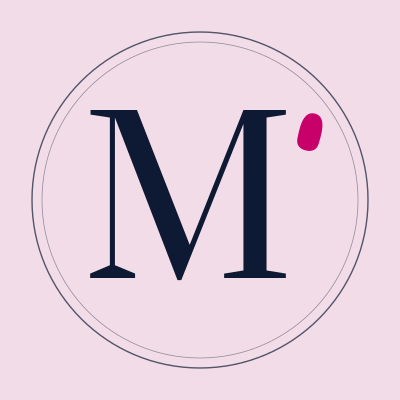
Каллиграфический росчерк мастера. Нежно и женственно, ближе к нынешнему логотипу.
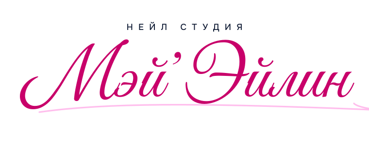
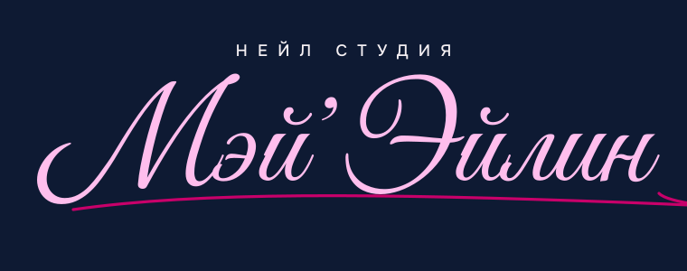
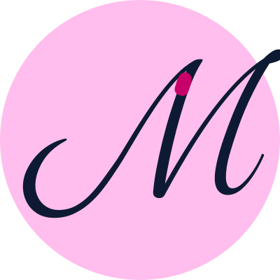
Круглая эмблема с монограммой «МЭ». Идеальна для сертификатов, пакетов, наклеек и аватарки.
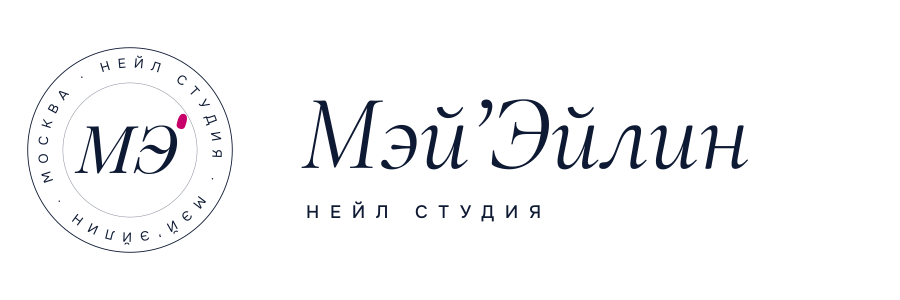
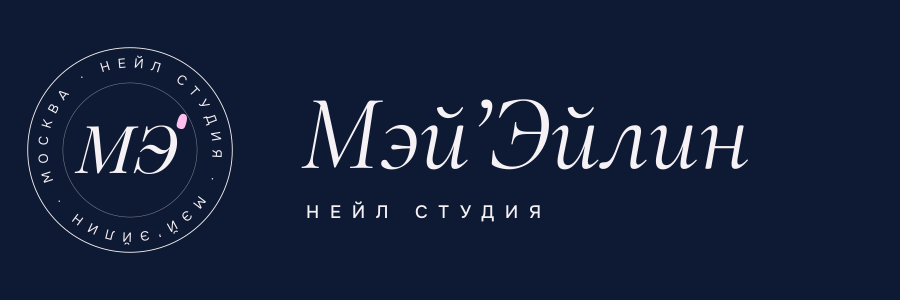
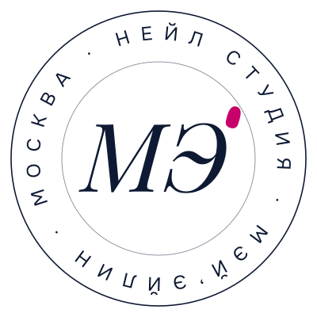
Крупный элегантный курсив, как у ювелирных брендов. Хорошо смотрится на тёмном.
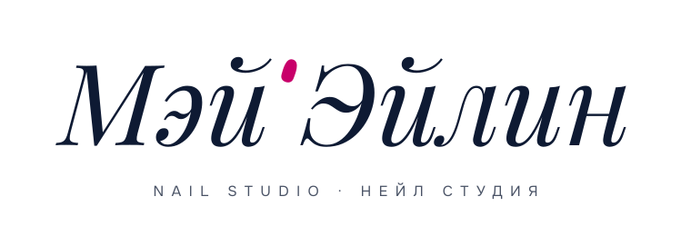
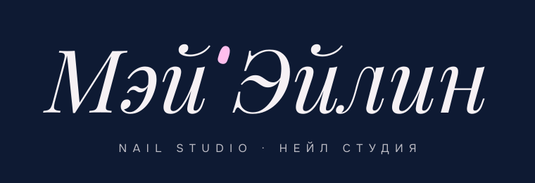
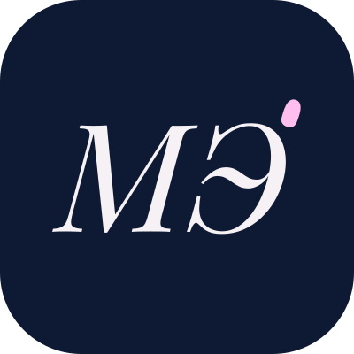
Римские прописные в столбик. Удобно для вывески, сторис и квадратных форматов.
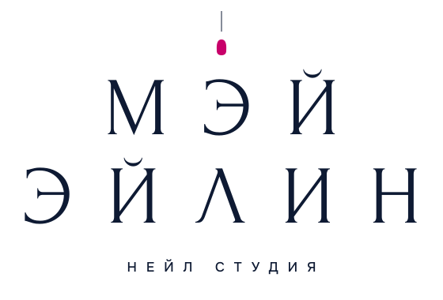
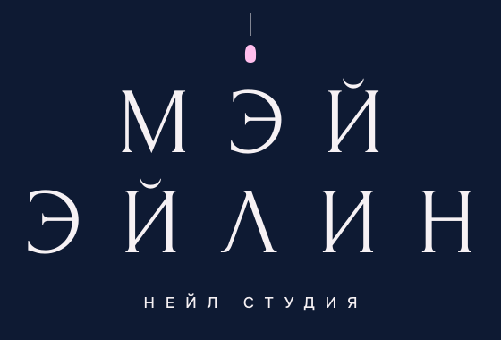
Знак академии в той же системе — с тем же ноготком.